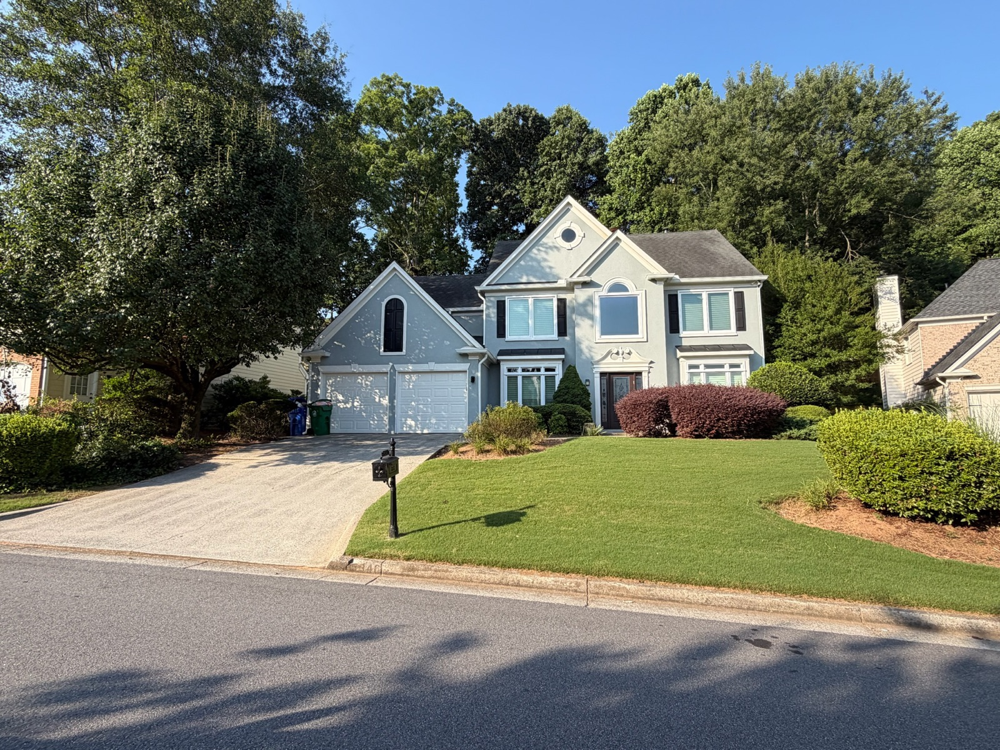
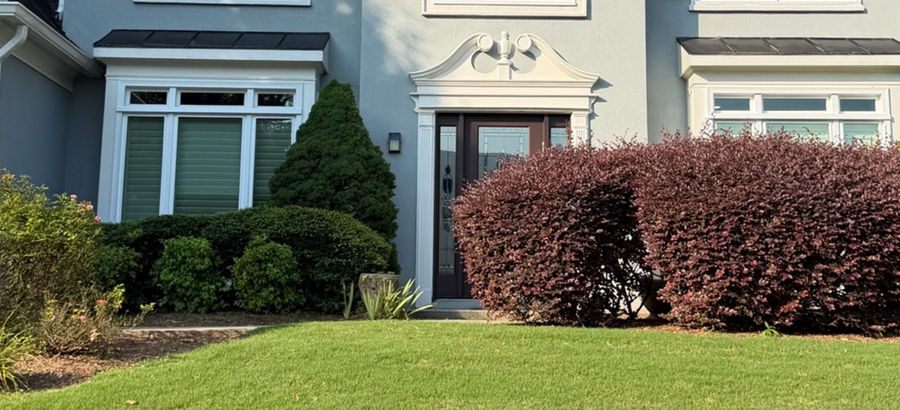
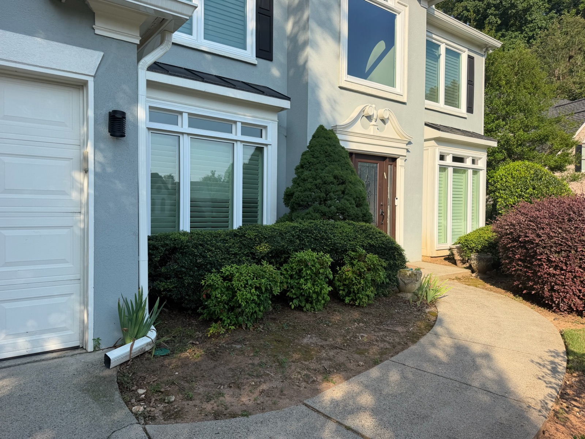
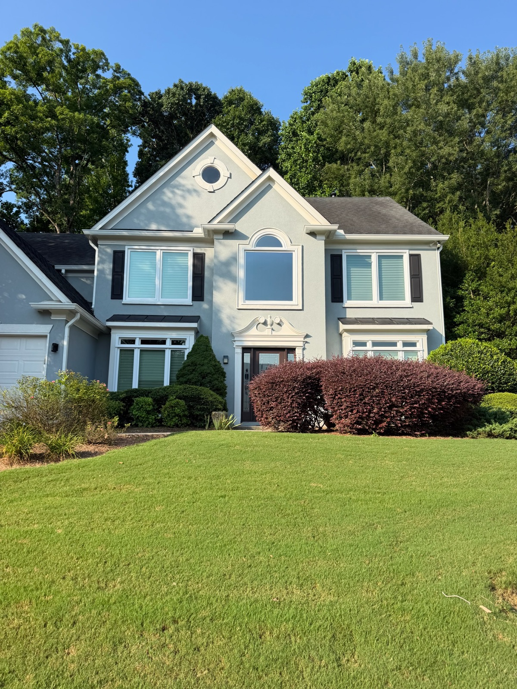
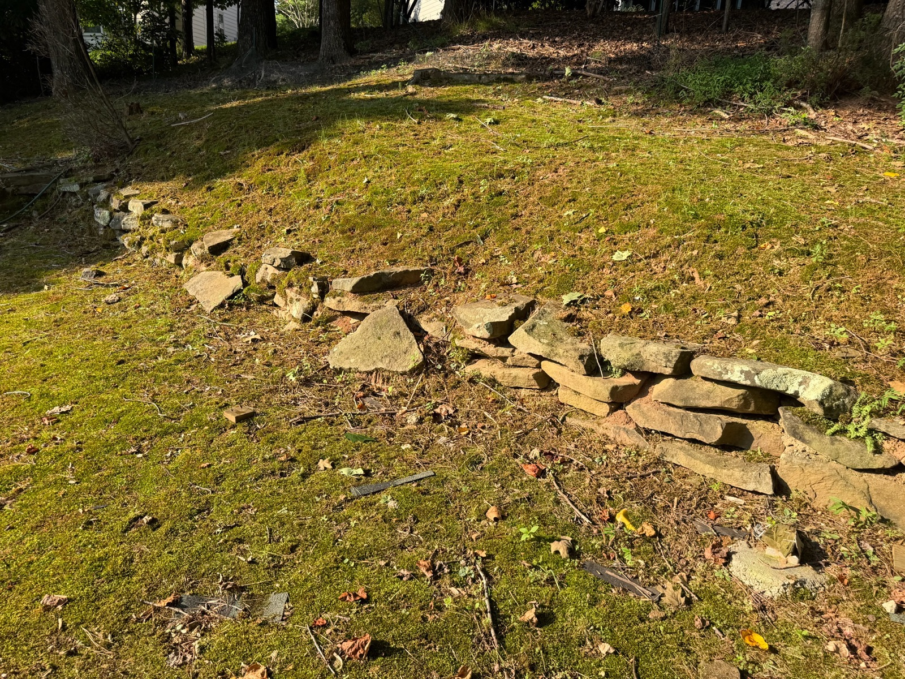
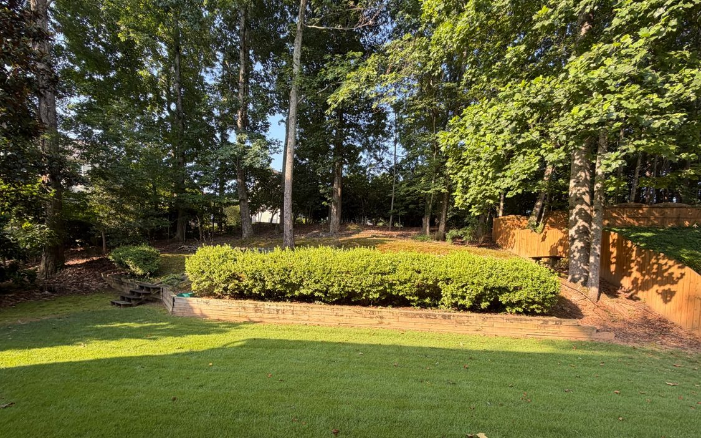
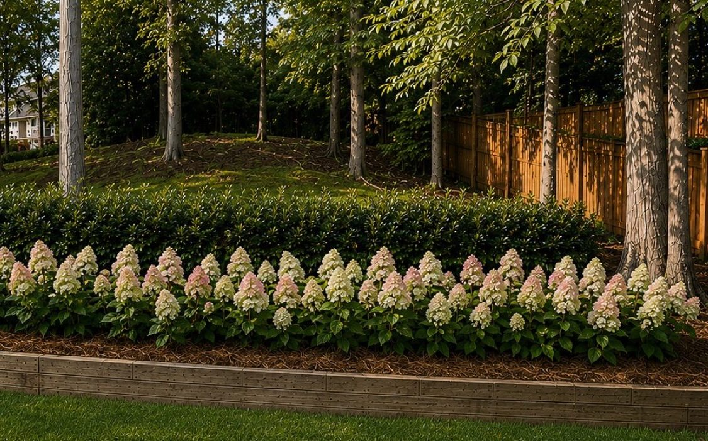
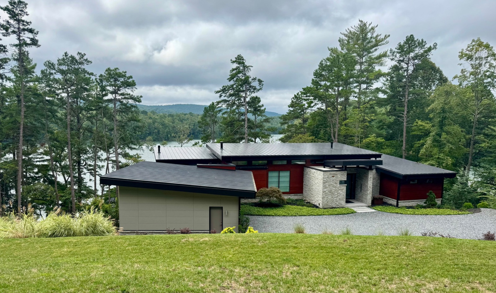

Preferences first
What do you like, dislike, and want to change? The render follows the conversation.

A complimentary concept prepared for this property
One possible direction—not an inspection, final design, or quote.
Explore the ideaAn invitation to explore
Creekside occasionally prepares complimentary visual ideas for a small number of Atlanta homes where the team sees a clear opportunity. No obligation, no work authorized, and no private inspection—just a more useful starting point than a generic postcard.
The first look
A few deliberate changes can reveal the architecture, give the beds year-round structure, and make the front door feel like the destination.

Open the sightlineVisual review
There are usually only a few moves that change how a yard feels. Here is where we would begin at this property.

The sod install is fresh and the bones are right. Layered planting could give the entry a more settled frame while keeping the architecture in view.

Selective pruning or replacement could reveal more of the front door and make the walk feel more open. The right move depends on condition and homeowner preference.

The fieldstone edge and slope deserve a closer look. A property walk can confirm whether planting alone is appropriate or whether the edge needs separate attention.
The plan — I
Start with one direction, then drag the divider. The building and camera remain fixed so the comparison shows the landscape change—not a different house.
Choose a direction
Both are starting points. Select a thumbnail to compare it against today.
Clipped evergreen forms, apricot drift roses, and a crisp mondo edge frame the entry with a tailored rhythm.
Illustrative planting palette · validate on site
Boxwood structure
A clean backdrop, planted with room to grow.
Apricot Drift Roses
Spaced for airflow and future fullness.
Dwarf Mondo Grass
Planted closely as a soft, low border.
Plant species, sizes, spacing, maturity, availability, drainage suitability, and quantities are confirmed after an on-property review.
The plan — II
A distylium backbone and a run of blushing-bride hydrangeas turn a tired slope into a settled garden view. These are separate reference angles, so they are shown side by side instead of as a misleading slider.


Backyard retaining wall plan · full sun
Vintage Jade Distylium
Evergreen structure that holds the line year-round.
Blushing Bride Hydrangea
Soft pink-to-white blooms through summer.
Pine Straw
Natural finish, replenished each season.
Style reference only—not a rendering of the same camera view or a construction plan.
Atlanta landscapes, thoughtfully built
Creekside Premier Landscaping designs, installs, and cares for high-end residential landscapes across Atlanta. The team pairs horticultural knowledge with practical installation experience—from planting and seasonal enhancements to hardscaping and complete outdoor transformations.
Meet the Creekside team
Meet Arjun
Arjun combines horticultural judgment with a practical, iterative way of working. The first conversation is about what the homeowner wants—not about defending a preset design. Visuals make the possibilities tangible, then measurements, light, drainage, access, and plant availability turn the preferred direction into a real scope.
What do you like, dislike, and want to change? The render follows the conversation.
Clean and structured or natural and layered—enough choice to learn taste without creating confusion.
Colors, plant character, and emphasis can change quickly before Creekside develops the field-validated plan.
How this becomes real
Share preferences, priorities, timing, and the direction that feels closest.
Confirm light, drainage, access, measurements, existing conditions, and budget.
Creekside refines plants, materials, quantities, phasing, and investment.
Move forward only after a written scope and homeowner approval.
Planning ranges
These broad planning bands are not estimates. They help decide whether a site visit is worth the next step.
$15K–$30K
Balanced scope
$30K–$55K
$55K+
Planning ranges only—not an estimate or offer. Final scope, pricing, schedule, plant availability, and feasibility require Creekside’s field review and a written proposal.
Recent work
Selected portfolio references. Locations and project details will be confirmed before any homeowner-facing delivery.



Next step
Arjun · Landscaping & horticulture
Creekside Premier Landscaping
Tell Arjun which direction feels closer and what you would change. If there is a fit, the next step is a 30–45 minute property walk to confirm what is feasible.
15-minute introductory call
Creekside Premier Landscaping
A quick conversation to understand preferences, priorities, and whether an on-property review makes sense.
Scheduling connection in progress
There is no live availability displayed yet. Text Creekside with two preferred windows, or use the request form.
A live Calendly widget will replace this panel after Creekside approves an event URL.